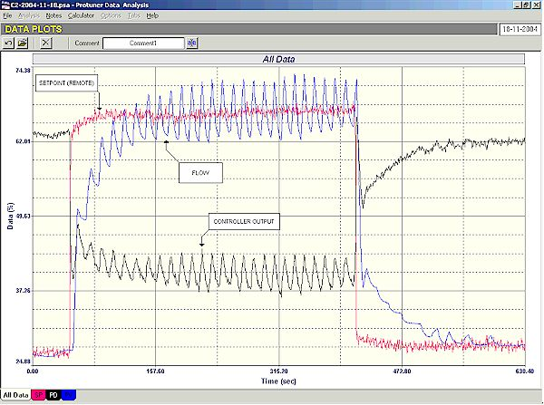
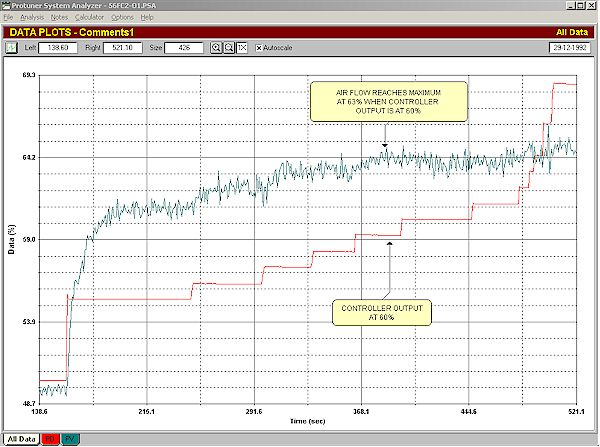

|
| [Home] [About us] [Contact us] [Training] [Optimisation services] [Protuner] |
| [Loop signatures] [Case histories] [Continuous loop performance monitoring] |
|
Loop Problem Signatures No 31 Non-linearity in control loops (part 2) (This article is a continuation of Loop Signature No 30, exploring reasons for non-linearities which may be encountered in feedback control loops). Operating valve outside linear (or linearised) range One can only expect to operate with linear installed characteristics within certain ranges on most valve types. For example most ordinary type butterfly valves are normally only used for control up to about 65% wafer opening position. Above this point the inherent valve characteristics change quite dramatically, and also these valves can exhibit instability above this point. Apart from this, valves of most types can exhibit bad non-linearity and even instability when operating too close to seat. An old rule of thumb is that under normal control conditions, one should work with a valve position above 20% opening. The solution to this is to size and stroke valves properly. (In the case of butterfly valves they should be stroked between 0 and 65%). Non-linear processes There are many processes that exhibit non-linearity. Typically:
Solutions
to this type of non-linearity are to use gain scheduling or in the case
of non-linear tanks, one can "linearise the measurement" by using a
calculation block available in many modern transmitters that allows one
to program the shape of the vessel into the transmitter. The
transmitter then effectively calculates an output that is proportional
to volume, which will allow one to control the level in the tank with
constant process gain. Non-linear load changes Load changes can often result in changing process dynamics, particularly in process gain. For example pump characteristics of many types of pumps and blowers can be very non-linear, resulting in changing process gain as the load changes. Other examples are found in controls where pump staging is sometimes used. For example under light loads only one pump might be used, but as the load increases a second parallel pump might be switched on. At that time the process gain will double, and a control loop may go unstable. Figure 5 illustrates such a case that was recorded recently in a power station. The loop in question is a cascade flow secondary whose setpoint is the output of the level controller in a large tank. Under certain circumstances the flow to the tank is doubled opening a second line. (It has a similar effect as if a second pump had been started). As soon as this happens the setpoint is immediately increased substantially. It can be seen how the flow starts oscillating. This is most likely to be due to a virtual doubling in process gain, without changing the tuning. The cycling ceased as soon as the flow was reduced again, and setpoint taken back down.  Figure 5 The best solution to these types of problems is to employ gain scheduling. Process Saturation Possibly not really non-linearity, but resembling it, process saturation occurs where the process reaches a limited state, and as a result the process gain changes, with much smaller movements on the PV. Figure 6 is taken from an open loop test on an airflow in a brewery. It shows the flow responding well as the PD is increased. However after a certain point the flow changes in relation to the PD changes get smaller, until further changes in PD produce no flow increases at all. It is fairly obvious that the pressure in the line is insufficient to allow any more flow.  Figure 6 In a case like this the instrument and control practitioner should consult with the process experts to ascertain if this situation is always the case, or if further flow could be obtained under other conditions. (For example possibly air is being drawn off the header to some other circuits whilst we were doing the test). If the answer is that the saturation is normal, and no further flow will ever be experienced, then bearing in mind that as shown in Figure 6 a maximum flow of 63% is reached when the controller output is at 60%, two important things should be performed which are good I&C practice and will not cost the plant any money except for some expenditure in time. These are:
Incorrect measuring techniques This is pretty self-explanatory. For example a differential head flow-metering device should have a square root extractor placed in the transmitter or in the controller (but not in both, as I have seen on several occasions). Calibration drift Also fairly self-explanatory. Calibration drift, particularly on span calibration, either in the transmitter and/or in the valve stroking, would cause changes in process gain. Interactive processes Not always very obvious, interactive feedback control loops can, and often do affect each other's response dynamics. It is quite possible that if you tune two feedback loops to minimise interaction between them, you may find the one suddenly going unstable, or alternatively very sluggish when the other loop is placed in manual. Split-range control Split range control is where the output of a controller is divided into two sections, each often feeding a separate valve. For example this strategy is sometimes used in heating/cooling control system. Commonly when the control strategy is designed and initiated, the ranges are split say 50% - 50%, irrespective of the actual dynamics of each segment. This is incorrect; the split should in fact be determined experimentally, by doing step changes in manual in both regions, and then splitting the range so that equal process gain is encountered in both segments. Changes with time The most difficult factor of all for feedback control to deal with is ageing. Unfortunately just as our own human dynamics change with time, so do those in process control loops. For example boilers scale up. Friction in valve packing may change. Play in mechanical linkages can increase causing bigger dead bands. As these types of factors change so do the dynamics. Just out of interest, some enterprising users of the Protuner use its modelling function to plot such changes, and after documenting a repetitive history of the ageing, they use it for predictive maintenance. This technique has worked very successfully. If the factors that are changing cannot be corrected, then the only other solution is to retune the controller. If ageing factors are predictable then gain scheduling can be employed. In certain rare processes I have encountered in petro-chemical refineries, the properties of a particular catalyst change over very short periods of time in a completely non-predictable way. This is extremely difficult to deal with using feedback control. The only possible solution is to use a continuous self-tuning controller if you can find one that will work in those circumstances. Michael
Brown is a specialist in control loop optimisation, with many years of
experience in process control instrumentation. His main activities are
consulting, and teaching practical control loop analysis and
optimisation. He gives training courses which can be held in clients'
plants, where students can have the added benefit of practising on live
loops. His work takes him to plants all over South Africa, and also to
other countries. He can be contacted at: |